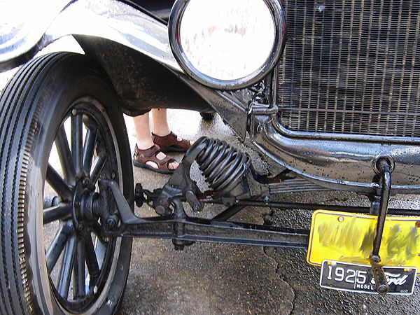

Si las llantas estuvieran unidas, estas derraparían, el mecanismo diferencial procura que el movimiento sea independiente, así se evita que la otra sea arrastrada por la velocidad de su par. La llanta del interior del eje, gira más despacio que
la del exterior, teniendo esta mayor fuerza de tarea en el movimiento giratorio.

Relacion con otro mecanismo
Principalmente, el sistema de dirección está compuesto por una serie de elementos que funcionan del siguiente modo: el conductor controla la trayectoria del automóvil por medio del volante, lo que accionará la barra de dirección, que es la encargada
de unirlo a la caja de dirección.
Los procesos alternos
Tabla avanzada
Cabecera MUltiples columnas
primera cola
segunda cola
Motores diesel
motores gasolina
Comentario
vinicio
veletanga
Hola mundo
Elemento de impuslo
Gasolina
combustible fosil
Pie de tabla
Mecanismos De posicion
Siendo la dirección uno de los órganos mas importantes en el vehículo junto con el sistema de frenos, ya que de estos elementos depende la seguridad de las personas; debe reunir una serie de cualidades que proporcionan al conductor, la seguridad
y comodidad necesaria en la conducción. Estas cualidades son las siguientes.
Tipo de calidad
El mecanismo diferencial es un invento que permite que la ruedas de los carros giren independientemente, no es como el troncomóvil de Los Picapiedras, las llantas están independientemente ligadas por el mecanismo diferencial en un invento asombroso
como lo muestra el siguiente vídeo.